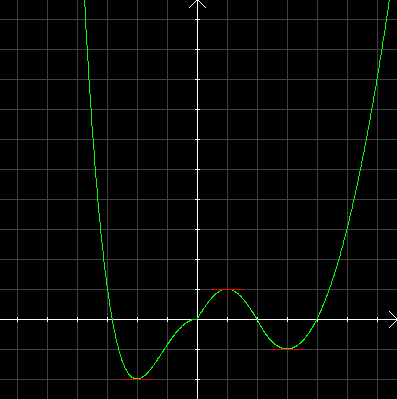
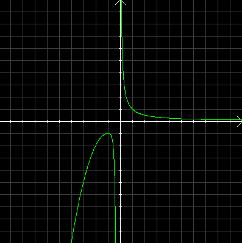
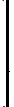
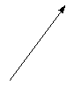
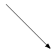

| Choisissez votre langue ! | Choose your language ! |
Extremum local
Maximum
Local extremum
Maximum
définition 1
On dit que f atteint en x0 un
'maximum local'
s'il existe un intervalle I de la forme ]x0-ε,x0+ε[ tel que f(x) ≤ f(x0) ∀x∈I. En outre si on a f(x) < f(x0) ∀x∈I-{x0}, on dit qu'il s'agit d'un maximum local 'strict' .
definition 1
We say that f reaches at x0 a
'local or relative maximum'
if there exists an interval I of the form ]x0 -ε,x0+ε[ such that f(x) ≤ f(x0) ∀x∈I. Furthermore if we have f(x) < f(x0) ∀x∈I-{x0}, we say that it is a ' strict' l ocal maximum.
Minimum
Minimum
définition 2
On dit que f atteint en x0 un
'minimum local'
s'il existe un intervalle I de la forme ]x0-ε,x0+ε[ tel que f(x) ≥ f(x0) ∀x∈I. En outre si on a f(x) > f(x0) ∀x∈I-{x0}, on dit qu'il s'agit d'un minimum local 'strict' .
definition 2
We say that f reaches at x0 a
'local or relative minimum'
if it exists an interval I = ]x0-ε,x0+ε[ such that f(x) ≥ f(x0) ∀x∈I. Furthermore if we have f(x) > f(x0) ∀x∈I-{x0}, we say that it is a ' strict' local minimum .
Extremum global
Maximum
Global extremum
Maximum
définition 3
On dit que la fonction numérique (f,D) atteint en x0 un
'maximum global'
(sur son domaine D) si f(x0) ≥ f(x) ∀x∈D.
definition 3
We say that the numerical function (f,D) reaches at x0 a
'global or absolute maximum'
(on its domain D) if f( x0) ≥ f(x) ∀x∈D.
Un maximum global correspond donc à un de f(D).
Minimum
A global maximum therefore corresponds to a of f(D).
Minimum
définition 4
On dit que la fonction numérique (f,D) atteint en x0 un
'minimum global'
(sur son domaine D) si f(x0) ≤ f(x) ∀x∈D.
definition 4
We say that the numerical function (f,D) reaches at x0 a
'global or absolute minimum'
(on its domain D) if f( x0) ≤ f(x) ∀x∈D.
Un minimum global correspond donc à un de f(D).
A global minimum therefore corresponds to a of f(D).
Voici maintenant une illustration de ces notions.
Here is an illustration of these concepts.

On peut voir sur cette courbe:
- Un minimum local (-2,-2) qui est en même temps un minimum global.
- Un maximum local (1,1).
- Un minimum local(3,-1).
- Il n'y a pas de maximum global.
Tableau de variation
Voici la représentation graphique d'une fonction numérique: We can see on this curve:
- A local minimum (-2,-2) which is also a global minimum.
- A local maximum (1.1).
- A local minimum(3,-1).
- There is no absolute maximum.
Table of variations
Here is the graphical representation of a numeric function:
Et voici le
'tableau de variation'
représentant cette fonction.
And here is the
'table of variations'
representing this function.
|
|
||||||||||||
| | | x | | | -∞ | -1 | 0 | +∞ | | | |||||
|
|
||||||||||||
|  | f(x) | -∞ |  | -1 |  | -∞ | +∞ | 0+ | ||||
|
|
||||||||||||
Il est clair que la vulgarisation des calculatrices graphiques, des tableurs et des ordinateurs personnels a faussé les règles du jeu. Auparavant, on établissait le tableau de variation préalablement au tracé (manuel) de la courbe.
L'établissement du tableau reste de nos jours encore, un passage obligatoire, un rite initiatique, pour la plupart des examens et concours.
Très (trop) souvent ce tableau est réalisé en utilisant des outils déjà évolués (dérivées) alors que la plupart du temps, une étude directe ou le calcul d'un taux de variation suffit amplement. Remarquons simplement que le symbole || (double barre) en dessous d'une valeur de la variable signifie, par convention, que la fonction n'est pas définie en ce point. Cela correspond souvent, mais pas forcément, à une asymptote verticale. Nous estimons que la signification des flèches ascendantes et descendantes est claire pour tout le monde.
L'établissement du tableau reste de nos jours encore, un passage obligatoire, un rite initiatique, pour la plupart des examens et concours.
Très (trop) souvent ce tableau est réalisé en utilisant des outils déjà évolués (dérivées) alors que la plupart du temps, une étude directe ou le calcul d'un taux de variation suffit amplement. Remarquons simplement que le symbole || (double barre) en dessous d'une valeur de la variable signifie, par convention, que la fonction n'est pas définie en ce point. Cela correspond souvent, mais pas forcément, à une asymptote verticale. Nous estimons que la signification des flèches ascendantes et descendantes est claire pour tout le monde.
It is clear that the popularization of graphing calculators, spreadsheets and personal computers has distorted the rules of the game. Previously, the variation table was established prior to the (manual) plotting of the curve.
The establishment of the table remains today, a compulsory passage, an initiation rite, for most exams and competitions.
Very (too) often this table is produced using already advanced tools (derivatives) whereas most of the time, a direct study or the calculation of a rate of variation is more than enough. We simply note that the symbol || (double bar) below a value of the variable means, by convention, that the function is not defined at this point. This often, but not necessarily, corresponds to a vertical asymptote. We believe the meaning of the up and down arrows is clear to everyone.
The establishment of the table remains today, a compulsory passage, an initiation rite, for most exams and competitions.
Very (too) often this table is produced using already advanced tools (derivatives) whereas most of the time, a direct study or the calculation of a rate of variation is more than enough. We simply note that the symbol || (double bar) below a value of the variable means, by convention, that the function is not defined at this point. This often, but not necessarily, corresponds to a vertical asymptote. We believe the meaning of the up and down arrows is clear to everyone.
|
Création Gilles Dubois
Created by Gilles Dubois
|
Janvier 2022
January 2022
|
Version mobile Jquery
Mobile Jquery version
|
|